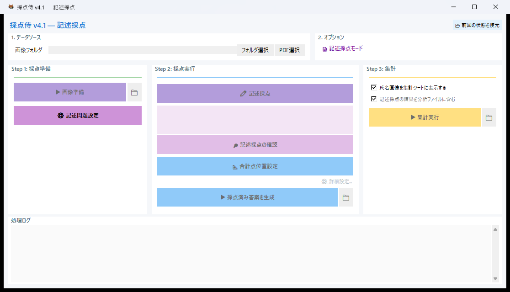
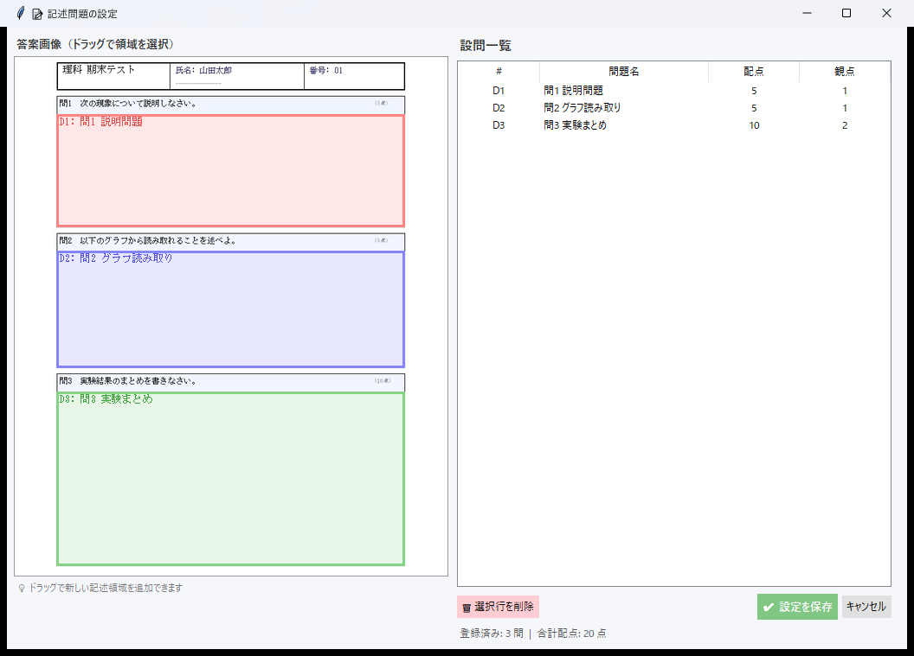
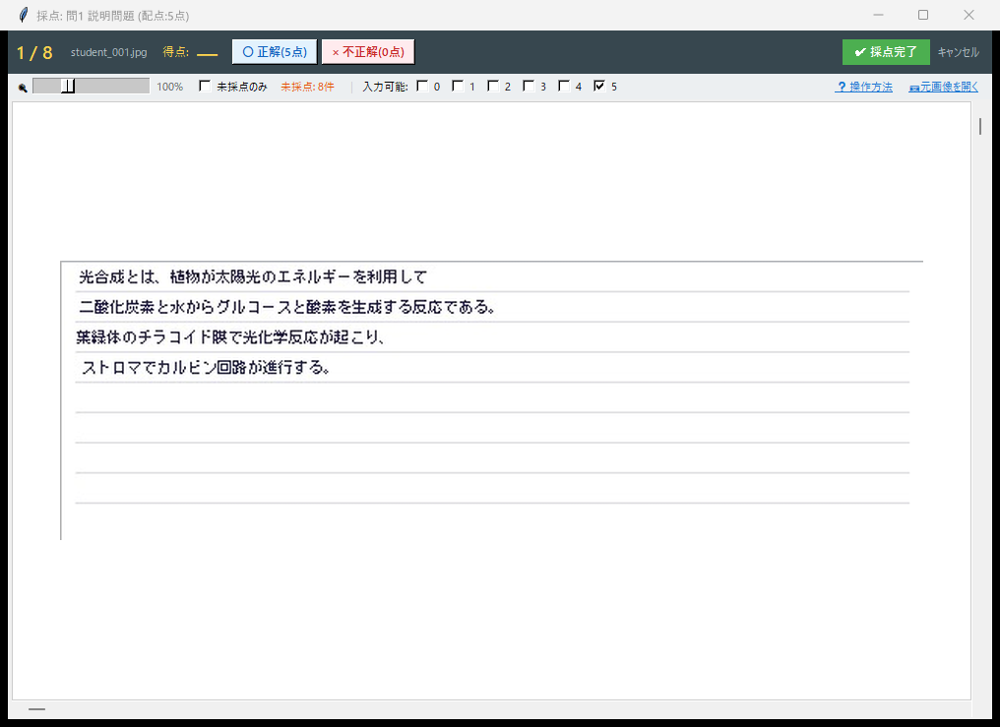
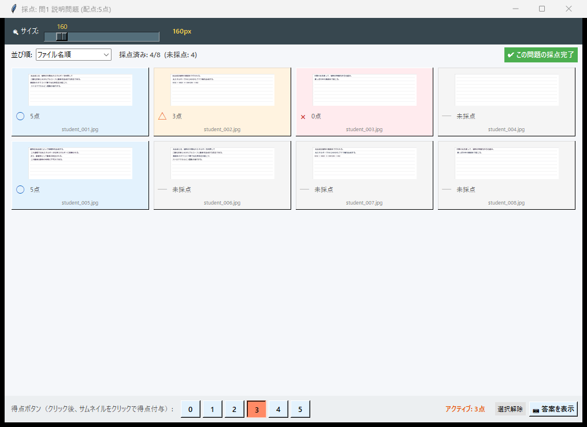

記述式採点の使い方¶
スキャン画像から採点領域を指定し、記述式の答案を効率的に採点するモードです。
座標ファイルは不要で、スキャン画像だけで始められます。
ワークフロー概要¶
スキャン画像読込 → 画像準備 → 採点領域の設定 → 問題ごとに採点 → 結果出力
1. スキャン画像の準備¶
記述式採点モードでは、Mark2 座標ファイルは不要です。必要なのはスキャン画像のみです。
| 必要なもの | 説明 |
|---|---|
| スキャン画像 | 答案をスキャンした JPEG / PNG / PDF。1 枚の画像 = 1 人分の答案 です |
スキャン時のポイント
- 解像度は 200〜300 dpi がおすすめです
- コーナーマーカーがある場合は、傾き補正が自動で行われます
- 普通のコピー機の「スキャン → フォルダ保存」機能で十分です
ファイル名が生徒名になります
ファイル名がそのまま集計シートの「生徒ID」として使われます。
01_山田太郎.jpg、02_鈴木花子.jpg のように、生徒名を含めたファイル名にしておくと便利です。
2. メイン画面の操作¶
モード選択で 「記述式採点」 を選ぶと、記述式専用のメイン画面が開きます。
画面上のボタンを 上から順に 操作してください。
- 「フォルダ選択」 ボタンを押して、スキャン画像が保存されているフォルダを選択します
（PDF ファイルの場合は 「PDF 選択」 を使います） - 「▶ 画像準備」 ボタンを押します — 画像の前処理が行われます
- 「⚙ 記述問題設定」 ボタンを押すと、統合セットアップ画面が開きます

記述式採点モードのメイン画面3. 採点領域の設定¶
統合セットアップ画面で、答案画像上の各設問の解答エリアをマウスドラッグで指定します。
- 左側 に答案画像が表示されます。採点したい記述欄の範囲を マウスでドラッグ すると、赤い矩形が表示されます
- ドラッグを離すと、右側 のテーブルに新しい行が自動的に追加されます
- テーブル上で 問題名・配点・観点 をダブルクリックして直接編集できます
- 複数の記述問題がある場合は、手順 1〜3 を繰り返してすべての問題領域を追加してください
- すべての領域を設定したら 「OK」 ボタンで確定します

記述問題の統合セットアップ画面 — 左で領域をドラッグ、右のテーブルで一括編集4. 採点方法¶
メイン画面の 「✏ 記述採点」 ボタンを押すと、問題一覧画面が開きます。
画面上部のプルダウンで 採点モード（「1枚ずつ」か「一覧（グリッド）」）を選んでから、
採点したい問題の 「採点」 ボタンをクリックすると、採点ウィンドウが開きます。
おすすめの使い分け
- 1枚ずつモード: 答案を拡大して見ながら、丁寧に採点したいとき
- グリッド一覧モード: 同じ問題の全生徒の解答を一度に見て、素早く採点したいとき
1枚ずつ採点モード¶
設問ごとに切り出した解答エリアを 1 人ずつ拡大表示し、採点します。
得点の入力方法¶
| 方法 | 操作 | 備考 |
|---|---|---|
| ○ / × ボタン | 画面上部の「○ 正解」「× 不正解」ボタンをクリック | ○ で満点、× で 0 点 |
| ショートカットキー | m → ○（満点）、b → ×（0点） |
最も素早い方法 |
| 数字キー | 0 〜 {配点} をキーボードで直接入力 |
配点が 9 点以下の場合のみ。部分点はこの方法で入力 |
| 数値入力欄 | 数値を入力して Enter | 配点が 10 点以上の場合に表示される入力欄 |
部分点の入力
部分点（例: 5 点配点で 3 点）は、数字キーで直接得点を入力してください。入力すると自動的に次の答案に進みます。
その他のキーボード操作¶
| キー | 操作 |
|---|---|
← → |
前後の答案に移動 |
Tab |
次の未採点答案にジャンプ |
Del / BackSpace |
得点をクリア |

設問単位の採点画面 — 解答エリアを拡大表示グリッド一覧モード¶
全生徒の同じ問題をサムネイル一覧で表示し、素早く採点できます。大量の答案をまとめて処理したいときに便利です。
操作手順¶
- 画面下部の得点ボタン（0〜配点）で、これから付ける得点を選択する
- サムネイルをクリックすると、選択中の得点がその答案に付与される
- 次のサムネイルをクリック → 繰り返し
おすすめの使い方
並べ替え機能で 「画像の白さ順」 にソートすると、白紙・空欄の答案が先頭に集まります。まず空欄を一括で 0 点にしてから、残りを採点していくと効率的です。
並べ替え機能¶
| 並べ替え | 内容 |
|---|---|
| ファイル名順 | デフォルトの表示順 |
| 得点 昇順 / 降順 | 得点でソート |
| 画像の白さ順 | 平均輝度でソート（空欄を見つけやすい） |

グリッド一覧モード — 全生徒の解答を一覧表示5. 描画設定¶
記述式採点用の描画設定では、○×△マークの表示や得点テキストのスタイルをカスタマイズできます。
 記述式採点の描画設定
記述式採点の描画設定
○×△ の自動判定
採点結果の画像出力では、得点に応じて自動的にマークが決まります。満点 → ○、0 点 → ×、それ以外 → △ として描画されます。
6. 結果の出力¶
採点が完了したら、メイン画面で以下の操作を行います。
- 「📐 合計点位置設定」 — 合計点を答案画像のどこに印字するかを指定します
- 「▶ 採点済み答案を生成」 — 得点が描画された画像を出力します
- (任意) 「氏名画像を集計シートに表示する」 にチェック → 氏名欄の位置を選択
- 「▶ 集計実行」 — 成績サマリーを Excel に出力します
すべての出力ファイルは、スキャン画像フォルダの中 の _saiten_grading_results/ フォルダに保存されます。
あなたのスキャン画像フォルダ/
├── 01_山田太郎.jpg, 02_鈴木花子.jpg, …
└── _saiten_grading_results/
├── 01_Results/ ← 採点設定データ
├── 02_Graded_Detail/ ← 採点済み答案画像（○×△マーク・得点付き）
└── 03_Final_Report/ ← 生徒別成績サマリー Excel、試験統計 Excel